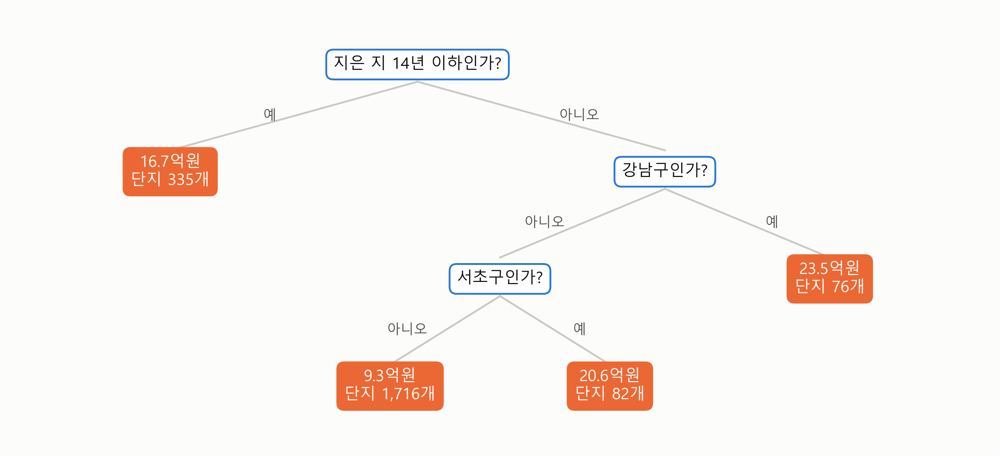

6. 머신러닝의 지도#
보고서의 한계에는 이런 줄이 있습니다.
가격을 잘 맞히는 것과 가격이 왜 그런지를 아는 것은 다르다. 무엇을 바꾸면 가격이 달라지는지는 이 결과로 말할 수 없다.
지금까지 다섯 절에 걸쳐 모형 두 개만 썼습니다. 회귀식, 그리고 닮은 단지입니다. 모형을 늘리는 대신 어떤 모형에나 통하는 생각을 익혔습니다. 오차로 채점한다, 시험 데이터로 채점한다, 유연함에는 알맞은 정도가 있다, 다이얼 눈금은 시험 데이터를 보지 않고 고른다. 이 절에서는 보고서 밖으로 나가 머신러닝 전체를 지도 한 장으로 펼쳐 봅니다. 물음은 세 가지입니다. 머신러닝이 다루는 일은 어떻게 나뉘는가. 닮은 단지와 회귀식 말고 어떤 모형들이 있고, 그 모형들은 무엇이 다른가. 잘 맞히는 것과 원인을 아는 것은 왜 다른가. 위에 옮긴 한계의 줄은 이 셋째 물음에서 다시 봅니다.
맞히는 일의 구분#
이 장 첫머리에서 머신러닝이 쓰이는 일 여섯 가지를 표로 봤습니다. 위쪽 셋은 종류를 맞히는 일(스팸인가 아닌가)이었고, 아래쪽 셋은 숫자를 맞히는 일(얼마인가)이었습니다. 이 구분에는 이름이 있습니다. 숫자를 맞히는 일을 회귀(regression)라고 하고, 종류를 맞히는 일을 분류(classification)라고 합니다. 여기서 회귀는 회귀식이라는 모형이 아니라 일의 종류를 가리킵니다. 회귀식뿐만 아니라 닮은 단지 모형으로 가격을 맞힌 것도 회귀입니다. 이 장은 처음부터 끝까지 회귀를 다뤘습니다.
분류에서도 이 장의 생각은 그대로 통합니다. 훈련 데이터와 시험 데이터로 나누고, 과적합을 조심하고, 다이얼 눈금은 교차검증으로 고릅니다. 달라지는 것은 채점하는 방법입니다. 가격은 “몇 % 빗나갔다”고 말할 수 있지만, 스팸인지 아닌지는 맞았거나 틀렸거나 둘 중 하나입니다. 스팸을 놓친 것과 멀쩡한 메일을 스팸으로 잘못 거른 것 가운데 어느 쪽이 더 큰 잘못인지도 따져야 합니다. 분류의 채점은 이 책에서 따로 다룹니다.
구분이 하나 더 있습니다. 여섯 가지 예는 모두 답이 달린 예를 컴퓨터에 보여 줬습니다. 지난 메일에는 스팸인지 아닌지가, 지난 거래에는 가격이 적혀 있었습니다. 이렇게 답이 달린 데이터로 배우게 하는 것을 지도학습(supervised learning)이라고 합니다. 반대로 답이 없는 데이터에서 무늬를 찾게 하는 것을 비지도학습(unsupervised learning)이라고 합니다. 고객 수만 명의 구매 기록을 주고 “비슷한 고객끼리 묶어 봐”라고 시키는 일이 그 예입니다. 누가 어느 묶음에 속하는지 정답이 미리 있는 것이 아닙니다. 표 6-1은 이 두 구분을 정리한 것입니다.
표 6-1. 머신러닝이 다루는 일의 구분
예측하는 것 |
예 |
|
|---|---|---|
지도학습: 회귀 |
숫자 |
이 단지의 가격은 얼마인가, 지금 출발하면 몇 분 걸리나, 내일 도시락이 몇 개 팔리나, 이 중고차는 얼마에 팔리나, 다음 달 전기를 얼마나 쓸까 |
지도학습: 분류 |
종류 |
이 메일은 스팸인가, 이 결제는 카드 주인이 한 것인가, 이 사람은 대출을 제때 갚을까, 사진 속 동물은 고양이인가 개인가, 이 고객은 다음 달에 서비스를 끊을까 |
비지도학습 |
정답이 따로 없다 |
고객을 비슷한 사람끼리 묶기, 뉴스 기사를 주제가 비슷한 것끼리 묶기, 노래를 분위기가 비슷한 것끼리 묶기, 함께 잘 팔리는 상품 짝 찾기, 평소와 다른 결제 골라내기 |
모형의 지도#
회귀를 하는 모형만 해도 수십 가지가 있습니다. 이름을 하나씩 외우려 들면 끝이 없습니다. 그런데 앞 절까지 배운 것으로 이 모형들을 한 줄에 세울 수 있습니다. 어느 모형에나 똑같이 물으면 됩니다. 이 모형은 어떻게 유연해지고, 과적합을 무엇으로 막는가.
표 6-2가 그 물음으로 그린 지도입니다. 맨 오른쪽 열에는 이 장의 데이터로 채점한 시험 오차를 적었습니다. 모든 모형에 같은 훈련 데이터 2,209개 단지와 같은 변수(구, 연식, 최고층)를 주고, 다이얼 눈금은 교차검증으로 고른 뒤, 같은 시험 데이터 500개 단지로 채점한 것입니다.
표 6-2. 모형의 지도 — 어떻게 맞히고, 과적합을 무엇으로 막는가
모형 |
어떻게 맞히나 |
유연함의 다이얼 |
시험 오차 |
|---|---|---|---|
회귀식 |
변수마다 계수를 곱해 더한다 |
넣는 변수의 수 |
15.8% |
규제를 건 회귀식 |
같은 식을 쓰되 계수가 커질수록 벌점을 매긴다 |
벌점의 세기 |
15.9% |
닮은 단지(\(k\)-최근접 이웃) |
가장 닮은 것 몇 개를 평균한다 |
몇 개를 보나 |
14.6% |
의사결정나무 |
“예, 아니오”로 답하는 질문을 차례로 던져 데이터를 가른다 |
질문을 몇 번까지 던지나 |
15.7% |
랜덤 포레스트 |
조금씩 다른 나무 수백 그루의 답을 평균한다 |
나무 한 그루의 크기 |
15.1% |
부스팅 |
작은 나무를 차례로 더하되, 앞의 나무들이 틀린 몫을 다음 나무가 맞힌다 |
나무의 수, 나무 한 그루의 크기 |
14.0% |
위의 두 행은 이미 아는 모형과 그 친척입니다. 변수가 수백 개가 되면 회귀식도 훈련 데이터를 세세하게 따라가 과적합이 생긴다고 했습니다. 이것을 막으려면 계수가 커질수록 벌점을 매깁니다. 훈련 데이터를 잘 맞혀도 계수를 크게 썼으면 점수가 깎이므로, 모형은 꼭 필요한 만큼만 계수를 키웁니다. 이 방법을 규제(regularization)라고 부릅니다. 벌점을 세게 매길수록 모형이 단순해집니다. 이 데이터에서는 변수가 적어 벌점을 매길 것이 거의 없었고, 점수도 회귀식과 거의 같습니다.
셋째 행은 이 장에서 줄곧 쓴 닮은 단지 모형, 곧 \(k\)-최근접 이웃입니다. 이 모형에는 미리 계산해 두는 규칙이 없습니다. 회귀식에는 계수가 있고 나무에는 질문이 있지만, 닮은 단지 모형은 훈련 데이터를 통째로 들고 있다가 물을 때마다 닮은 단지를 찾습니다. 약점도 여기서 나옵니다. 변수가 연식과 최고층 둘뿐일 때는 닮은 단지가 흔하지만, 변수가 스무 가지로 늘면 그 모두가 닮은 단지는 드뭅니다. 그래서 변수가 많은 데이터에서는 힘을 잃습니다. 또 닮음을 차이의 크기로 따지기 때문에, 변수의 눈금을 어떻게 맞추느냐에 따라 답이 달라집니다.
아래 세 행은 의사결정나무(decision tree)와, 그 나무를 여러 그루 모은 모형입니다. 의사결정나무는 스무고개를 닮았습니다. 그림 6-1은 이 장의 훈련 데이터로 만든 아주 작은 나무입니다.

그림 6-1. 질문 세 개로 단지를 가지 끝 넷으로 가르는 의사결정나무. 주황 칸의 숫자는 그 가지 끝에 모인 훈련 데이터 단지들의 평균 가격이다.
그림에서 보듯이 나무는 맨 위의 질문에서 시작해 가지가 갈라지며 내려가고, 더 묻지 않는 가지 끝(주황 칸)에서 멈춥니다. 나무를 거꾸로 뒤집어 놓은 모양이라 의사결정나무라는 이름이 붙었습니다. 주황 칸에 적힌 가격은 그 가지 끝에 모인 훈련 데이터 단지들의 평균 가격입니다. 지은 지 14년 이하인가? 그렇다면 왼쪽으로 내려가 16.7억원이라는 답을 받습니다. 아니라면 오른쪽으로 내려가 다음 질문을 받습니다. 강남구인가? 그렇다면 23.5억원, 아니라면 또 한 번 묻습니다. 어떤 질문을 어떤 순서로 던질지는 사람이 정하지 않습니다. 가지 끝에 모인 단지들의 가격이 서로 가장 비슷해지도록 컴퓨터가 훈련 데이터에서 골라냅니다. 처음 보는 단지의 가격을 맞힐 때도 그 단지에 대해 질문에 하나씩 답하며 가지를 타고 내려가, 도착한 가지 끝의 평균 가격을 답으로 내놓습니다.
질문 세 개짜리 나무는 너무 단순합니다. 강남구도 서초구도 아닌 오래된 단지 1,716곳에 모두 9.3억원이라고 답하니까요. 질문을 더 던지면 가지가 잘게 갈라지고 답이 세밀해집니다. 그렇다면 끝까지 가르면 어떻게 될까요? 이 데이터에서 나무를 끝까지 가르면 가지 끝이 1,921개가 됩니다. 훈련 데이터의 단지가 2,209개이니 가지 끝 하나에 단지가 한두 곳씩 들어 있는 셈입니다. 이 나무의 훈련 오차는 0.0%, 시험 오차는 17.3%입니다. 닮은 단지 1개 모형에서 본 것과 똑같은 일이 벌어졌습니다. 모형은 달라도 외우는 모습은 같습니다. 질문의 수를 교차검증으로 골라 가지 끝을 80개쯤에서 멈추면 시험 오차는 15.7%가 됩니다.
나무 한 그루에는 약점이 있습니다. 훈련 데이터가 조금만 달라져도 맨 위의 질문이 바뀌고, 그러면 그 아래가 통째로 달라집니다. 랜덤 포레스트(random forest)는 이 약점을 숫자로 누릅니다. 훈련 데이터를 조금씩 다르게 뽑아 나무를 수백 그루 만들고, 그 답을 평균합니다. 나무 한 그루 한 그루는 저마다의 우연을 따라가지만, 평균하면 우연이 서로 지워집니다. 닮은 단지를 1개가 아니라 10개 봤을 때와 같은 이치입니다. 부스팅(boosting)은 나무를 한꺼번에 만들지 않고 차례로 더합니다. 첫 나무가 맞히고 남긴 빗나간 몫을 둘째 나무가 맞히고, 그래도 남은 몫을 셋째 나무가 맞히는 식입니다.
지도에 올리지 않은 큰 이름이 하나 있습니다. 신경망(neural network)입니다. 단순한 계산 단위를 아주 많이 이어 붙여 층층이 쌓은 모형이고, 층을 깊게 쌓은 것을 딥러닝이라고 부릅니다. 사진, 소리, 글처럼 표로 정리하기 어려운 데이터에서 힘을 발휘합니다. 이 장 첫머리에서 말한 대화형 AI가 신경망입니다. 신경망에서는 유연함이 워낙 커서 과적합을 막는 장치가 여러 겹으로 들어가지만, 훈련 데이터와 시험 데이터를 나누고 시험 데이터의 점수로 판단한다는 뼈대는 이 장에서 배운 그대로입니다.
닮은 단지 모형은 이 장에서 다룬 것이 전부이고, 나머지 모형들은 이 책의 다른 장에서 하나씩 자세히 다룹니다. 여기서는 이름과 자리만 알아 두면 됩니다.
점수가 비슷한 까닭#
표 6-2의 맨 오른쪽 열을 다시 봅시다. 여섯 모형의 시험 오차는 14.0%에서 15.9% 사이에 모여 있습니다. 가장 단순한 회귀식과 가장 공들인 부스팅의 차이가 2%포인트가 안 됩니다. 앞 절에서 본 것처럼 단지를 다르게 나누면 점수가 1 ~ 2%포인트 움직이니, 이 표로 순위를 매기기는 어렵습니다. 분할을 여섯 번 바꿔 보면 부스팅과 랜덤 포레스트, 닮은 단지 10개 모형이 대체로 앞서고 회귀식이 그 뒤를 따르지만, 차이는 늘 작습니다.
실망스러운 결과일까요? 그렇지 않습니다. 까닭을 생각해 보면 배울 것이 있습니다. 모형에 준 정보가 구, 연식, 최고층 셋뿐입니다. 단지의 가격을 가르는 다른 사정들, 곧 지하철역까지의 거리, 학군, 단지의 크기 같은 것은 어느 모형에게도 알려 주지 않았습니다. 모형이 아무리 유연해도 데이터에 없는 정보를 만들어 낼 수는 없습니다.
정보를 하나만 더해 봐도 알 수 있습니다. 서울시가 공개하는 단지 정보에서 세대수를 가져와 변수로 더하면, 회귀식의 시험 오차가 2%포인트쯤 내려갑니다(세대수를 확인할 수 있는 단지 1,650곳에서 15%가 13%로). 모형을 회귀식에서 부스팅으로 바꿔 얻은 것과 같은 크기입니다. 잘 맞히려면 모형을 바꾸는 것만큼, 때로는 그보다 더, 쓸 만한 정보를 더하는 것이 중요합니다.
💡 팁: AI는 요청하지 않아도 화려한 모형을 여럿 돌려 보고 가장 점수가 좋은 것을 내놓곤 합니다. 그럴 때는 “단순한 회귀식보다 얼마나 나은지, 분할을 바꿔도 그 차이가 유지되는지 보여 줘”라고 요청해 보세요. 차이가 작다면 설명하기 쉬운 단순한 모형을 쓰는 편이 나을 때가 많습니다.
맞히는 것과 원인을 아는 것#
이제 보고서의 한계 둘째 줄로 돌아옵니다. 가격을 잘 맞히는 것과 가격이 왜 그런지를 아는 것은 다르다.
익숙한 예가 있습니다. 여름철 아이스크림 판매량을 알면 그날 물놀이 사고가 몇 건 일어날지를 꽤 잘 맞힐 수 있습니다. 아이스크림이 많이 팔리는 날 사고도 많기 때문입니다. 하지만 아이스크림 판매를 막는다고 사고가 줄지는 않습니다. 둘 다 더운 날씨를 따라 움직였을 뿐입니다. 맞히는 데는 함께 움직이는 것이면 충분합니다. 왜 함께 움직이는지는 몰라도 됩니다.
이 장의 모형도 그렇습니다. 모형들은 최고층이 높은 단지의 가격을 높게 맞힙니다. 회귀식에서 최고층의 계수는 양수이고, 닮은 단지 모형은 최고층이 비슷한 단지를 찾아 그 가격을 가져옵니다. 그렇다고 건물을 더 높이 지으면 가격이 오른다는 뜻은 아닙니다. 고층 단지는 최근에 지은 곳이 많고 세대수도 많습니다. 모형은 그런 것들이 뒤섞인 “최고층이 높은 단지는 가격이 높더라”를 배웠을 뿐입니다. 맞히는 데는 그것으로 충분합니다.
“무엇을 바꾸면 결과가 달라지는가”는 다른 물음이고, 인과 추론 장이 다룬 물음입니다. 그 장에서 프로그램 참가자와 일반 근로자를 그냥 비교했더니 효과의 부호까지 뒤집혔던 것을 떠올려 보세요. 원인을 말하려면 누구와 누구를 비교했는지, 무엇을 같다고 가정했는지를 따져야 했습니다. 맞히는 모형은 그런 것을 따지지 않습니다. 따지지 않아도 잘 맞힐 수 있기 때문입니다.
그래서 맞히는 모형을 쓸 때는 물음을 가려서 써야 합니다. “이 단지는 얼마쯤 할까”에는 이 장의 모형이 답할 수 있습니다. “이 단지를 리모델링하면 얼마나 오를까”에는 답할 수 없습니다. 모형은 지은 지 얼마 안 된 단지가 비싸다는 것을 배웠을 뿐입니다. 새 단지가 비싼 데에는 세대수가 많은 큰 단지라는 까닭도 섞여 있는데, 리모델링을 한다고 세대수가 늘지는 않습니다. AI가 만든 예측 모형이 어떤 변수를 중요하게 썼다고 알려 주더라도, 그것은 맞히는 데 쓸모가 있었다는 뜻이지 그 변수가 원인이라는 뜻이 아닙니다.
요약 — 이 절의 물음과 답
머신러닝이 다루는 일은 어떻게 나뉘는가? 답이 달린 데이터로 배우는 지도학습과 답이 없는 데이터에서 무늬를 찾는 비지도학습이 있다. 지도학습 가운데 숫자를 맞히는 일을 회귀, 종류를 맞히는 일을 분류라고 한다. 이 장은 회귀를 다뤘다.
어떤 모형들이 있고 무엇이 다른가? 규제를 건 회귀식, 의사결정나무, 랜덤 포레스트, 부스팅, 신경망이 있다. 모형마다 유연해지는 방식과 과적합을 막는 다이얼이 다르지만, 훈련 데이터와 시험 데이터로 나눠 채점하고 다이얼 눈금을 교차검증으로 고르는 것은 같다. 이 장의 데이터에서는 여섯 모형의 시험 오차가 14 ~ 16%로 비슷했다. 모형에 준 정보가 셋뿐이었기 때문이다.
잘 맞히는 것과 원인을 아는 것은 왜 다른가? 맞히는 데는 함께 움직이는 것이면 충분하다. 모형은 최고층이 높은 단지의 가격을 높게 맞히지만, 그것이 건물을 높이면 가격이 오른다는 뜻은 아니다. 무엇을 바꾸면 결과가 달라지는지는 인과 추론의 물음이다.
이 장을 마치며#
이제 이 장 첫머리의 보고서를 처음부터 끝까지 읽을 수 있습니다. 요약 첫 줄의 15%, 16%, 36%는 처음 보는 단지의 가격이 실제에서 보통 몇 % 빗나갔는지를 계산한 오차였고, 전체 평균 가격 하나로 예측할 때의 36%가 비교의 출발점이었습니다(2절). 둘째 줄의 0%와 16%는 같은 모형을 훈련 데이터와 시험 데이터로 채점한 것이었고, 모형의 점수는 16% 쪽이었습니다(3절). 셋째 줄의 22%는 닮은 단지를 너무 많이 봐서 뭉뚱그린 결과였습니다. 그림 오른쪽 패널의 가운데가 높은 선은 과적합과 과소적합 사이에 알맞은 자리가 있다는 뜻이었습니다. 해석의 교차검증은 시험 데이터를 보지 않고 몇 개를 볼지 고르는 방법이었습니다(4절). 표의 맨 오른쪽 열은 점수가 분할에 따라 흔들린다는 것을 보여 줬습니다(5절). 한계의 둘째 줄은 방금 봤습니다.
이 장을 연 물음, 한 번도 본 적 없는 단지의 가격을 얼마나 잘 맞힐 수 있는가에는 이렇게 답할 수 있습니다. 구, 연식, 최고층만 알 때 보통 15%쯤 빗나갑니다. 가격이 10억원인 단지라면 1억 5천만원쯤입니다. 아무것도 모를 때의 36%보다는 훨씬 낫지만, 이 숫자만 믿고 집값을 정하기에는 모자랍니다. 그리고 모형을 무엇으로 바꾸든 이 점수는 크게 달라지지 않았습니다.
이 장에서 훈련 데이터의 점수가 가장 좋았던 것은 닮은 단지 1개 모형과 끝까지 가른 나무였습니다. 둘 다 훈련 오차가 0%였고, 둘 다 시험 데이터에서는 다른 모형보다 나을 것이 없었습니다. 훈련 데이터의 점수는 모형이 얼마나 많이 외웠는지를 말해 줄 뿐입니다.
이 장은 머신러닝을 다루는 여러 장의 출발점입니다. 이 절에서 그린 지도의 칸들은 모형마다 따로 둔 장에서 자세히 채워집니다. 모형의 이름은 달라져도 물음은 같습니다. 무엇으로 채점했나, 그리고 그 점수를 믿어도 되나. 이 두 물음이 머신러닝을 다루는 모든 장을 이해하는 열쇠입니다.
이 장에서 AI가 한 계산은 하나도 틀리지 않았습니다. 닮은 단지 1개 모형의 0%도, 단지가 아니라 거래 하나하나로 나눴을 때의 6.5%도 정확히 계산한 숫자입니다. 문제는 계산이 아니라, 그 숫자가 우리가 물은 것에 대한 답이냐였습니다. 그것을 따지는 것은 우리의 몫입니다. 그러니 이 장에서 가져갈 한 문장은 이것입니다.
AI의 보고서가 어떤 점수를 말하면, 그것을 무엇으로 채점했는지부터 본다.